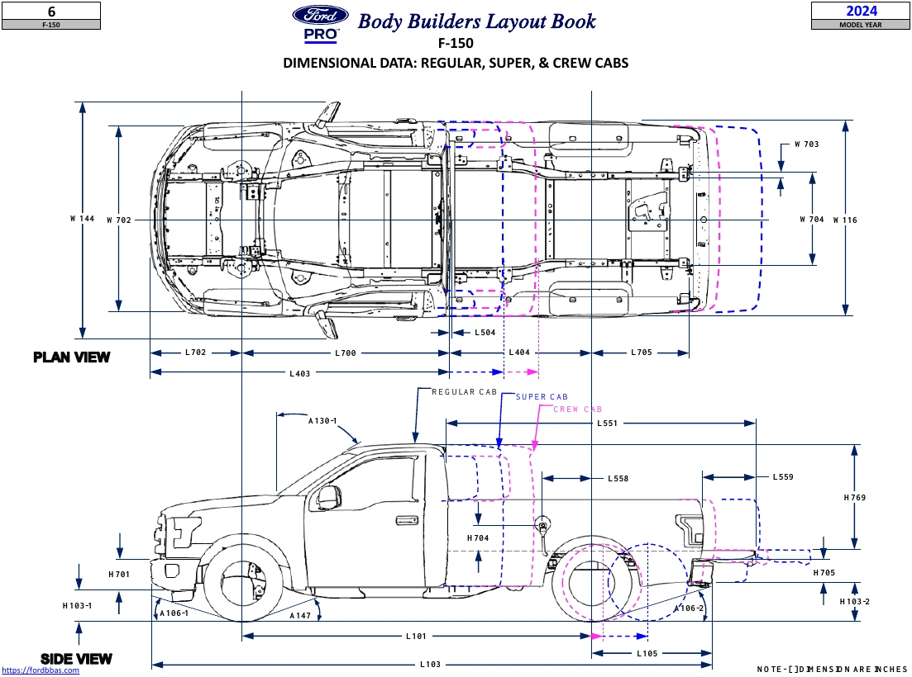
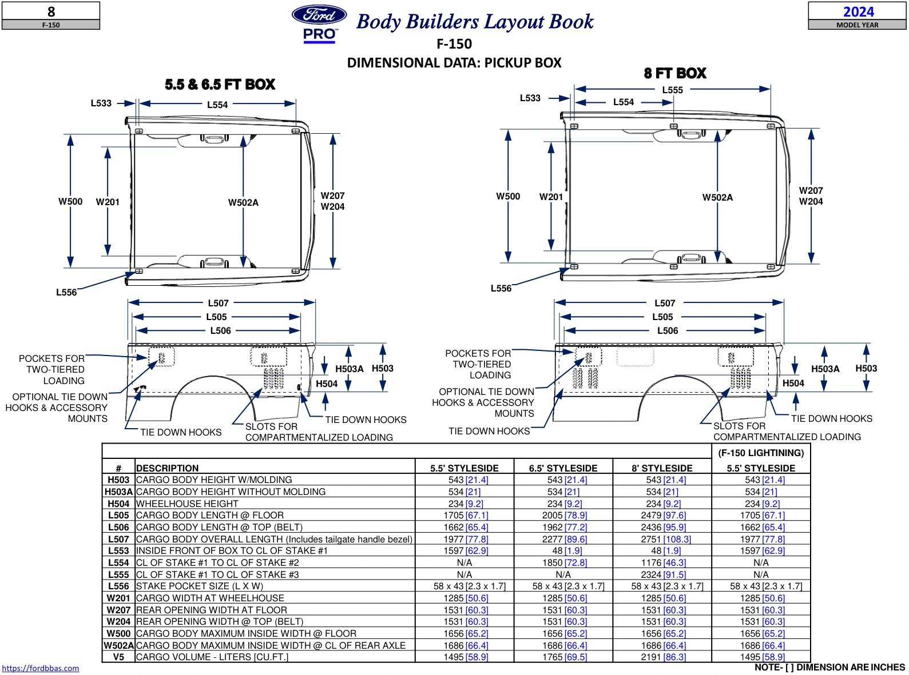

01Front
Open in 3D


Nearly head-on, the cab crown, A-pillars and mirror-to-mirror width line up. The rounded mirror corners and bumper detailing differ at close scale.
The live comparison has 36 Ford studio angles, five exterior detail crops and nine photographs of a 2024 Raptor R. The 2027 Ruby Red studio truck has an uncovered bed. The 2024 Rapid Red model has a three-panel tonneau. The cabin and installed engine photographs show a Shelter Green 2024 truck.
Each link opens the live split at that camera. The named features were checked against model 74643b5dde. 21 views verify the features described, 18 have reference or visibility limits, and 11 show features that need further refinement.
Across 36 angles, mean upper-body silhouette overlap is 97.0%. The per-view median edge distance averages 2.8 pixels. Upper-body silhouette overlap uses the intersection divided by the union of the projected model and Ford render above the 0.93 m centerline cut. The thin antenna and ground shadows are excluded. Edge distances are symmetric and measured in the native 2160 × 926 images. At front three-quarter angles the model’s outer fender corner projects beyond the Ford render. Two separate photographs of the 2024 truck give opposite signs for that offset, so the review records the discrepancy and retains the measured 2024 nose.
| View | Assessment | Observation |
|---|---|---|
| Front | Verified | Nearly head-on, the cab crown, A-pillars and mirror-to-mirror width line up. The rounded mirror corners and bumper detailing differ at close scale. |
| Front left · 10° | Limited | The roof and far bed corner track the outline. The far mirror and the front fender merge in this projection, leaving the local contour just outside the source. |
| Front left · 20° | Needs refinement | The roof and bed rail follow Ford’s outline. The grille-side corner projects too far forward and squarely beyond the rounded turn into the lamp. |
| Front left · 30° | Needs refinement | The roof and windshield rake align. A squared nose projects past the Ford hood and headlamp at the far corner. The same offset persists in the next two angles. |
| Front left · 40° | Needs refinement | The cab roof, upper windshield and straight left bed rail are close. The model’s outer hood nose extends beyond Ford’s corner ahead of the headlamp. |
| Front left · 50° | Needs refinement | The left windshield and bed run register together. The model still has a projecting squared corner above and ahead of the far-side lamp. |
| Front left · 60° | Verified | The A-pillar rake, roof length and bed rail meet the studio contour. The extreme nose shows a small, localized forward projection. |
| Front left · 70° | Verified | The driver-side roof crown, cab-to-bed step and hood line closely follow the Ford outline. The antenna belongs to the reference truck. |
| Front left · 80° | Limited | The left bed rail and cab length agree. The top windshield outline is slightly inset along the rake and the near-profile angle gives little depth information. |
| Left profile | Verified | Broadside, the left cab roof, hood-to-cowl transition and bedside top establish the relative cab and box lengths. The extractor now sits over the forward dome at the position supported by the 2024 side photo. Ford’s mast is excluded. |
| Rear left · 80° | Limited | The straight bed top and roof height register. The outer edge of the cab back sits aft of the reflected rear glass; this grazing angle gives a weak glass-edge check. |
| Rear left · 70° | Verified | The rear edge of the left cab, roof crown and top of the outer bed rail follow the reference at this shallow rear angle. |
| Rear left · 60° | Verified | The hood and bed tops register on opposite sides of the cab. A small residual remains at the upper rear cab corner. |
| Rear left · 50° | Verified | The roof crown, front A-pillar and outboard bed edge remain aligned from this rear-left angle. The inner box changes with the tonneau. |
| Rear left · 40° | Limited | The roof top and bed’s near corner agree. The rear-glass margin and receding box rail have a visible offset; the different cover state limits the inner-edge comparison. |
| Rear left · 30° | Limited | The near C-pillar and roof crown follow the reference. The far-side rail projects above the open box near its tail corner, where the model carries its tonneau. |
| Rear left · 20° | Needs refinement | The cab roof and rear-glass top are close. At the far end the front fender stands outboard, while the far bed corner projects above Ford’s outside rail. |
| Rear left · 10° | Limited | The roof span and rear-glass outline are close. The far rear box corner shows a gap at the rail and tonneau edge. The two trucks have different box closure states. |
| Rear | Verified | From directly behind, the cab crown, upper glass width and mirror span agree. The raised stance and closed tonneau are visible below the scored roof edge. |
| Rear right · 10° | Limited | The roof crown and near mirror register. The far rail sits above the open bed in this near-rear view; the covered edge is a different assembly state. |
| Rear right · 20° | Needs refinement | The cab crown is close in rear-right view. The far front fender extends outward and the far bed corner sits high; this reproduces the discrepancy on the opposite side. |
| Rear right · 30° | Limited | The roof flow and near C-pillar align. The rear rail sweep and front corner protrude together at this angle, with different cover states at the back. |
| Rear right · 40° | Verified | The upper passenger-side windshield and sloping roof-to-cab-back line are supported. The front fender crest has a small outward residual. |
| Rear right · 50° | Verified | Roof crown, rear cab step and the outer passenger bed rail track the reference. Reflections change how the rear glazing reads. |
| Rear right · 60° | Verified | The bed rail and roof run align in the shallow rear-right view. The right headlamp corner has a small forward projection. |
| Rear right · 70° | Limited | The bed top is supported. The outline at the rear-glass corner changes with reflection, and the apparent C-pillar edge remains inset from the body outline. |
| Rear right · 80° | Needs refinement | The roof and bed top are close in length. The nose extends past the passenger headlamp and the cab’s rear corner projects aft of the reference. |
| Right profile | Verified | In right profile, the roof, outer bed length and forward position of the extractor align. The modeled extractor crown rises slightly above the Ford profile. The model’s glazing is lighter in this lighting. |
| Front right · 80° | Verified | The straight passenger bed top and upper hood line register. There is a small doubled edge on the windshield rake approaching the cowl. |
| Front right · 70° | Verified | The passenger roof, windshield and outer hood-to-lamp transition register through this shallow front angle. |
| Front right · 60° | Verified | The passenger roof length and bed step follow the photographed perimeter. A narrow offset remains at the outboard hood tip. |
| Front right · 50° | Needs refinement | The roofline and cab back are supported. The front hood corner finishes beyond Ford’s rounded tip on the right, repeating the discrepancy seen on the left. |
| Front right · 40° | Needs refinement | The windshield and bed side align more closely than the nose. The model’s squared far-side front corner projects past the Ford headlamp. |
| Front right · 30° | Needs refinement | The rear roof corner and windshield sweep align. The hood nose and upper grille corner project outside the Ford outline toward the far side. |
| Front right · 20° | Needs refinement | The roof crown is supported. A forward and outward projection remains where the hood leads into the far-side lamp. |
| Front right · 10° | Limited | The crown and upper windshield register. The far mirror and fender shoulder overlap in this near-front angle and the shoulder projects a little outside the image contour. |
| Front grille and tow hooks | Verified | The three amber markers, two grille openings and orange recovery loops register in the front view. The model shows more of the silver skid plate below the bumper. |
| Headlight and amber DRL | Limited | The stacked projectors and the upper and outer amber guides occupy the correct housing. The model’s side chamber reflects a broader strip of light. Ford’s render and the 2024 lamp photograph show different lighting states. |
| Power Dome hood extractor | Verified | All three extractor crests clear the front hood graphic in this view. The tray moved 0.30 m forward to match its position in the side photograph of the 2024 truck. The orange graphic differs from the studio reference. |
| 17" wheel and 37" KO2 tire | Limited | The hub, tire contact patch and flare align in profile. The photographed wheel finish, openings and sidewall relief differ from the model’s 2024 package. |
| Taillamp and bedside graphic | Limited | The outer lamp and tailgate seam meet across the split. The studio truck has a different bedside graphic and an uncovered bed. |
| Driver's cockpit | Verified | The refitted camera puts the steering-wheel rim, SYNC screen and right climate dial in the photographed positions. The steering hub and upper dash retain simpler contours. |
| Steering wheel and 12" cluster | Verified | The crown of the rim and the lower spoke sit at the photograph’s height. The center pad is squarer and the stitching is more prominent on the model. |
| Center stack and SYNC 4 display | Verified | The screen corners and both rows of climate knobs align more closely than before the camera refit. The width of the vent surround and the labels remain approximate. |
| Recaro front bucket seats | Limited | The curved bolsters and cushion insert are visible on both front seats. The model’s near backrest is partly obscured by the pillar, limiting comparison of the outer contour against the photograph. |
| Driver door trim | Verified | The forward pull, projecting armrest and open map pocket follow the photographed door trim. The speaker surround and the upper window frame retain simpler contours. |
| Rear SuperCrew cabin | Limited | The three rear headrests and two buckle locations register across the bench. The reference has a panoramic roof and the model has the solid roof. |
| 5.2L supercharged Predator V8 | Limited | The blower badge, battery terminal, coolant reservoir and intake locate the installed V8. The photographed hose routing, loom and cowl trim have more detail than the exposed model. |
| Predator V8 supercharger detail | Limited | The blower sits between the foreground intake and rear cowl. The reservoir and blower-neck spacing still differs, and the photograph reveals only the installed upper assembly. |
| Front skid plate and underbody | Limited | Both rear tires are visible below the skid plate. The plate dominates the near edge of this view and obscures much of the driveline. Skid grooves and suspension links remain approximate. |
The revised door skins carry the lower stamped crease and painted upper frames. Reshaped horizontal recovery loops pass through the bumper openings. The revised grille has open webs and recessed fins. Each projector sits in a separate reflector cup behind the headlamp lens. A measured 0.30 m forward correction places the three hood extractor pods above the crown. The front seats have contoured bolsters and the front door cards have open pockets, armrests and window switches. The measurements below were taken from the compressed model served by the viewer.
| Check | Ford | Previous model | Current model |
|---|---|---|---|
| Approach angle | 33.1° | 33.3° | 33.3° |
| Departure angle | 24.9° | 24.9° | 24.9° |
| Breakover angle | 24.4° | 23.8° | 23.8° |
| Cab-to-bed longitudinal clearance | — | 13.08 | 8.99 |
| Closed tonneau panel tops | — | +1.00, +1.00, +1.00 | +1.00, +1.00, +1.00 |
| Hood-to-lens vertical gap across sampled sections | — | 12.77–31.12 | 12.77–31.12 |
| Ground clearance | 333 | 333.00 | 333.00 |
The previous column records the 2026-11-26 exterior rebuild. Neither model’s painted panels touch the headlamp lenses or grille frame, and in both the hood swings from closed to 48° without striking the fixed front panels.
| Dimension | Ford | Previous model | Current model |
|---|---|---|---|
| Overall length | 5,908 | 5,861 | 5,878 |
| Wheelbase | 3,693 | 3,693 | 3,693 |
| Width without mirrors | 2,210 | 2,210 | 2,210 |
| Width with mirrors | 2,438 | 2,440 | 2,440 |
| Overall height | 2,047 | 2,049 | 2,049 |
| Front track | 1,887 | 1,887 | 1,887 |
| Rear track | 1,877 | 1,877 | 1,877 |
| Ground clearance | 333 | 333 | 333 |
The model measures 5,878 mm nose to tail, 30 mm shorter than Ford’s specification. Wheelbase measures 3,693 mm between axle centers. The tire contact plane sets the height and ground-clearance datum. The upper-body contour measurements and the frame-specific differences are in the 50-frame review.
The official dimensioned schematics below explain the source geometry and which Raptor R specifications override the shared F-150 drawings.

Measurements and model hashes · 2026-11-26 exterior rebuild sources · Download the Blender measurement script
Ford Pro 2024 Body Builders Layout Book, pages 6–8 contains dimensioned plan and side views, the Regular/Super/Crew cab table, and pickup-box drawings. These support the shared F-150 cab and 5.5-foot box layout. The overlaid outlines are not an exact Raptor R body blueprint.
Ford Mexico’s 2024 Raptor brochure, page 14 adds a dimensioned side/rear schematic. Its generic outline and listed 2,049 mm width do not match the dedicated US Raptor R width specification. This model uses the US 2024 Raptor R figures, including 2,210 mm without mirrors, with photographs guiding Raptor-specific exterior details.


Zoomed crops of Ford’s 360° frames show where the hood’s downturned lip, the headlamp and the front fender meet. The three archived crops below show the preceding exterior rebuild, rendered from the same calibrated camera, and the model’s outline drawn over Ford’s render.


The model leaves about 13 mm between the hood lip and the top of the lens, and no painted panel touches a lens or the grille frame. The hood clears the fixed front panels from closed to 48°. The measured values are under Current rebuild and measured dimensions.
Inspect the headlight in 3D · Measurements and model hashes · Download the Blender measurement script
Nearly head-on, the cab crown, A-pillars and mirror-to-mirror width line up. The rounded mirror corners and bumper detailing differ at close scale.


The roof and windshield rake align. A squared nose projects past the Ford hood and headlamp at the far corner. The same offset persists in the next two angles.


The A-pillar rake, roof length and bed rail meet the studio contour. The extreme nose shows a small, localized forward projection.


Broadside, the left cab roof, hood-to-cowl transition and bedside top establish the relative cab and box lengths. The extractor now sits over the forward dome at the position supported by the 2024 side photo. Ford’s mast is excluded.


The hood and bed tops register on opposite sides of the cab. A small residual remains at the upper rear cab corner.


The near C-pillar and roof crown follow the reference. The far-side rail projects above the open box near its tail corner, where the model carries its tonneau.


From directly behind, the cab crown, upper glass width and mirror span agree. The raised stance and closed tonneau are visible below the scored roof edge.


The roof flow and near C-pillar align. The rear rail sweep and front corner protrude together at this angle, with different cover states at the back.


The bed rail and roof run align in the shallow rear-right view. The right headlamp corner has a small forward projection.


In right profile, the roof, outer bed length and forward position of the extractor align. The modeled extractor crown rises slightly above the Ford profile. The model’s glazing is lighter in this lighting.


The passenger roof length and bed step follow the photographed perimeter. A narrow offset remains at the outboard hood tip.


The rear roof corner and windshield sweep align. The hood nose and upper grille corner project outside the Ford outline toward the far side.


The three amber markers, two grille openings and orange recovery loops register in the front view. The model shows more of the silver skid plate below the bumper.


The stacked projectors and the upper and outer amber guides occupy the correct housing. The model’s side chamber reflects a broader strip of light. Ford’s render and the 2024 lamp photograph show different lighting states.


All three extractor crests clear the front hood graphic in this view. The tray moved 0.30 m forward to match its position in the side photograph of the 2024 truck. The orange graphic differs from the studio reference.


The hub, tire contact patch and flare align in profile. The photographed wheel finish, openings and sidewall relief differ from the model’s 2024 package.


The outer lamp and tailgate seam meet across the split. The studio truck has a different bedside graphic and an uncovered bed.


The refitted camera puts the steering-wheel rim, SYNC screen and right climate dial in the photographed positions. The steering hub and upper dash retain simpler contours.


The crown of the rim and the lower spoke sit at the photograph’s height. The center pad is squarer and the stitching is more prominent on the model.


The screen corners and both rows of climate knobs align more closely than before the camera refit. The width of the vent surround and the labels remain approximate.


The curved bolsters and cushion insert are visible on both front seats. The model’s near backrest is partly obscured by the pillar, limiting comparison of the outer contour against the photograph.


The forward pull, projecting armrest and open map pocket follow the photographed door trim. The speaker surround and the upper window frame retain simpler contours.


The three rear headrests and two buckle locations register across the bench. The reference has a panoramic roof and the model has the solid roof.


The blower badge, battery terminal, coolant reservoir and intake locate the installed V8. The photographed hose routing, loom and cowl trim have more detail than the exposed model.


The blower sits between the foreground intake and rear cowl. The reservoir and blower-neck spacing still differs, and the photograph reveals only the installed upper assembly.


Both rear tires are visible below the skid plate. The plate dominates the near edge of this view and obscures much of the driveline. Skid grooves and suspension links remain approximate.